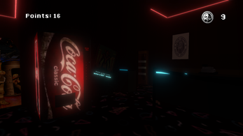
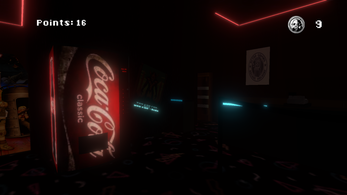

Insert Coin to Escape
 


In Insert Coin to Escape, I was the main responsible for the game design and level design of the game, with the goal of creating a tense and immersive atmosphere inside an old arcade.
I created a closed and dark scenario, exploring elements of horror and developed a lighting system that subtly guides the player, indicating safe spots and working machines.
I carefully planned the safe environments and the distribution of playable machines, requiring risky decisions from the player. I also worked on the balancing of the mini-games and the collection points for the essential items for the escape.
I was responsible for the creation of the pixel art used in the game, collaborated on the programming of the mini-games, and finalized with the integration of all assets and systems in the engine.